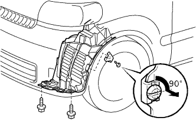

フロントバンパー 取り外し |
| 1. ラジエータ グリル W/ラジエータ サポート シール UPR取りはずし |
クリップリムーバーを使用して、クリップ6個を取りはずす。
 |
ラジエータグリル、ラジエータサポートシールUPRの周囲および上面に保護テープを貼りつける。
保護テープを貼ったマイナスドライバーを使用して、図の3箇所のツメのかん合をサポートシールを車両後方にずらしてはずす。

ラジエータサポートシールUPRを持ち上げ、すき間からラジエータグリルのツメのかん合をはずす。

ツメのかん合がはずれているのを確認しラジエータグリルを取りはずす。
ラジエータ サポート シール UPRを取りはずす。
| 2. フロントフェンダ ライナ LH取りはずし |
スクリュー2本をはずしフロントフエンダライナ前部（一部）を取りはずす。
|  |
クリップを90°回転させて取りはずす。
| 3. フロントフェンダ ライナ RH取りはずし |
フロントフェンダ ライナ LHと同様の手順で取りはずす。
| 4. フロントバンパ カバー取りはずし |
 |
バンパなどに傷つけないため、フロントフエンダやバンパーに保護テープを貼る。
クリップリムーバーを使用してクリップを2個取りはずす。
フロントバンパ下部のスクリューを6本取りはずす。
フロントバンパ下部のボルトを2本取りはずす。
手でフロントバンパサイド部を引きツメのかん合をはずし、フロントバンパカバーを取りはずす。
フォグランプのコネクタを切り離す。 (フォグランプ付き車)
フロントカバーを傷つけないように取りはずす。
スクリュ2本をはずし、フロントバンパサイドブラケットLHおよびRHを取りはずす。